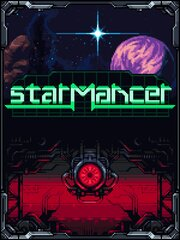

Starmancer
Starmancer
Details
|  | |
| Playtime | 22m 0s |
| Last Activity | 9/15/2019 6:40:52 |
| Added | 8/19/2023 14:50:25 |
| Modified | 8/19/2023 19:06:21 |
| Completion Status | Played |
| Library | Steam |
| Source | Steam |
| Platform | PC (Windows) |
| Release Date | 8/5/2021 |
| Community Score | |
| Critic Score | |
| User Score | |
| Genre | Indie Role-playing (RPG) Simulator Strategy |
| Developer | Ominux Games |
| Publisher | Chucklefish Games |
| Feature | Single Player |
| Links | Official Steam Discord GOG Twitch Wikia Wikipedia |
| Tag | |
Description

After a catastrophe on Earth, humanity launches the Starmancer Initiative in a desperate attempt to seek refuge among the stars. Millions of refugees uploaded their consciousness into your memory banks--entrusting their minds and the future of the human race to an Artificial Intelligence, a Starmancer. To you.
Stranded in a strange star system, your task as a Starmancer is to construct and manage a space station capable of sustaining human life.
Starmancer offers gameplay with consequences, a living sandbox environment, space exploration, and managing the lives of colonists.
Create a utopian society where everyone is well fed, happy, and safe. Take colonists on adventures through the galaxy, using them for the greater good of expanding the station and sustaining human life. Or ignore the rules and figure out how many times a colonist can eat space rock before their liver is destroyed. Go crazy. The choice is yours!

- Sustain Life - Colonists have needs, like hunger and sleep. Build farms and grow crops for food. Build bathrooms to prevent smelly accidents. Construct med bays and assign doctors to craft medkits, experiment with diseases, and extract heads for recycling purposes.
- Express Yourself - Customize your station with unique walling, floors, furniture, and tons of weird and wonderful decorations and objects. Place cheerful paintings to remind the colonists how friendly and relatable you are, and motivational posters to let them know how much you value their productivity. Design fancy kitchens, luxurious bedrooms, and relaxing gardens.
- Power, Water, and Atmosphere - Provide power by connecting machines with wires. Prepare against blackouts by creating separate or redundant grids for your vital machines. Use pipes and water recyclers to convert dirty water into clean water for your farms. Create isolated atmospheres using vents and air ducts.

- Grow Colonists - Colonists are grown in your core’s incubator, with personas assigned from the minds of Earth refugees stored in memory banks on your station. If tragedy strikes, don’t worry, you can always regrow your favorite colonists!
- Jobs - Assign roles like farmer, doctor, miner, and resource hauler. Watch as your rookie explorer acquires experience and becomes a deadly warrior--demolishing any zombie, slime, or rogue bot in their path
- Unique Colonists - Randomized hair color and style, eye color, and skin color adds thousands of colonist variations. These variations go beyond aesthetics, too. Some colonists are aggressive and fight often, while others keep the lights on when they go to sleep. Every game is different--your station and colonists will be unique to you.
- Morale - Colonists remember the good (and bad) things that happen to them. Traumatic experiences, like seeing a dead body, drastically reduces their morale. Feed your colonists tasty food and decorate your station to keep morale high. Unhappy colonists will stop working. Be careful, though, when morale gets too low, colonists will start fighting each other. If morale remains low, colonists adopt strange behaviors: talking to walls, lighting fires, and spray painting graffiti.
- Skills - Colonists have skills like strength, health, researching, and speed. As your colonists perform these tasks, they get better and better. Colonists with high strength skill can defeat monsters in a single punch (they can also drag unconscious colonists)!

Beyond your station’s borders lies the vast darkness of space—filled with wildlife, abandoned stations, and rare loot!
- Draft - Draft and send your bravest colonists out into the wilderness to defeat hostile wildlife—creating a safe environment for your gentler colonists to gather resources and discover precious loot!
- Hostile Wildlife - Slimes, undead zombies, and malfunctioning robots are just a few of the enemies inhabiting the nearby asteroids and derelict stations. Feed food to your colonists to heal them during combat.
- Relics - Special items with unique properties. An ordinary pen that erases all memories. An encyclopedia that increases all experience earned. C4 for blowing up monsters and clearing paths in stations.
- Derelict Stations - A Medilab overrun with the undead. A waste station taken over by slimes. A casino ship guarded by the robot mafia. Explore them all. Move any objects you find into your base and keep them forever. Your crew can even live in the abandoned stations!
- Procedurally Generated - The asteroids and stations beyond your borders are generated every time you warp to a new star system, but the resources, wildlife, and stations are consistent in a star biome. This helps you find basic resources, but you’ll never know exactly what to expect when you arrive in a new system. Maybe a nest of alien critters is blocking access to a patch of crystals. Or a purple slime is patrolling the only exit out of a Waste Station.

Key Features
- Build a thriving space station, with tons of customization.
- Manage the lives of colonists aboard your station.
- Warp to randomized star systems to explore, loot, and defeat enemies
- Tinker with the sandbox using cheats: spawn monsters, build instantly, give yourself all the money, and more.
- Modding support
- Active Development — Check out our weekly developer stream!
- Build a thriving space station, with tons of customization.